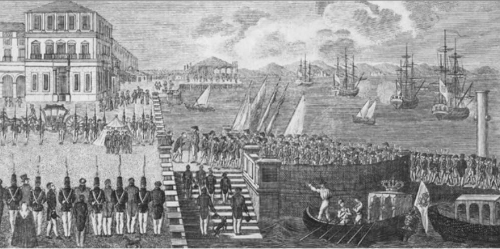

1820
O período compreendido entre o “Dia do Fico” - 9 de janeiro de 1822, até a Proclamação da Independência do Brasil - em 7 de setembro de 1822, foi demasiadamente conturbado no Brasil, considerando aspectos sociais, econômicos e, em especial, os políticos.A partir da saída de D. João VI do Brasil, em 26 de abril de 1821, e a permanência de D. Pedro como Regente, as Cortes em Lisboa começaram a pressionar o retorno de D. Pedro a Portugal, em um processo de retirar do Brasil a situação de liberdade política e comercial que alcançara, tentando retorná-lo à situação de colônia. Era de se esperar que os brasileiros não aceitariam mais o retrocesso de suas liberdades, principalmente as comerciais. Pelos Decretos n° 124 e 125, de 29 de setembro de 1821, as Cortes em Lisboa estabelecem nova administração política, militar e financeira para o Brasil, todas a ela Diversos acontecimentos contribuíram para a nossa Independência. Um dos mais significativos foi quando D. Pedro decide permanecer no Brasil, após tantas pressões da Corte em Lisboa determinando o seu regresso, ficando esse ato registrado em nossa história como “O Dia do Fico”.
Subordinadas, além de exigir o regresso de D.Pedro, por considerarem não ser mais necessária a sua presença no Brasil. Esses decretos chegaram ao Rio pelo Navio Infante D. Sebastião",em 9 de dezembro de 1821, e no dia seguinte foram conhecidos, provocando forte reação do grupo que defendia uma separação de Portugal.Representações de São Paulo, Minas Gerais e Rio de Janeiro chegariam a D. Pedro rogando pela sua permanência e o descumprimento dos decretos mencionados anteriormente.Em 1º de janeiro de 1822, D. Pedro recebeu a Representação da Província de São Paulo, datada de 24 de dezembro de 1821 e, em 2 de janeiro, encaminhou correspondência a seu pai, D.João VI:“Meu pai e meu Senhor. Ontem, [...], chegou de São Paulo [...] o ofício que ora remeto incluso para que Vossa Majestade conheça e faça conhecer ao Soberano Congresso,quais são as firmes intenções dos paulistas, e por elas conhecer quais são as gerais do Brasil [...]. Farei todas as diligências por bem para haver sossego, e para ver se posso cum-prir os decretos 124 e 125, o que me parece impossível, porque a opinião é toda contra,em toda a parte.”É célebre uma declaração da Província de São Paulo a D. Pedro:“Ou vai e nós nos declaramos independentes,ou fica e então continuamos a estar unidos e seremos responsáveis pela falta de execução das ordens do Congresso; além disso, tanto os ingleses europeus como os americanos ingleses nos protegem na nossa independência no caso de ir Sua Alteza”.Essa atitude revelaria que os separatistas contavam obter o apoio dos Estados Unidos da América e da Grã-Bretanha. Em 9 de janeiro de 1822, na Sala do Trono, após discurso emocionante do Presidente do Senado da Câmara, José Clemente Pereira, pedindo a permanência do Príncipe, e opondo-se a toda pressão de Lisboa,D. Pedro teria se pronunciado:“Como é para o bem de todos e felicidade geral da Nação, estou pronto. Diga ao povo que fico. Essa atitude revelaria que os separatistas contavam obter o apoio dos Estados Unidos da América e da Grã-Bretanha. Em 9 de janeiro de 1822, na Sala do Trono, após discurso emocionante do Presidente do Senado da Câmara, José Clemente Pereira, pedindo a permanência do Príncipe, e opondo-se a toda pressão de Lisboa, D. Pedro teria se pronunciado:
“Como é para o bem de todos e felicidade geral da Nação, estou pronto. Diga ao povo que fico.”
A partir deste episódio, conhecido como o "Dia do Fico", se desencadeia um processo de emancipação definitiva de Portugal. Eram muitos os que conspiravam a favor, dentre eles os irmãos Andradas, podendo destacar José Bonifácio de Andrada e Silva, que viria a ser designado nosso “Patriarca da Independência”. Devemos considerar, também, o papel relevante da maçonaria e da imprensa no processo de articulação da independência, com participação especial da aristocracia brasileira. O povo não participaria, ou melhor, não teve atuação relevante em decorrência de serem coibidos de se manifestar em assuntos da política do Estado. Não podemos deixar de destacar a nossa primeira Imperatriz, D. Leopoldina, Princesa Austríaca, figura marcante em nossa emancipação como país independente. Em consequência, em 11 de janeiro, D. Pedro demitiu o ministério nomeado por seu pai e, em 16 de janeiro, empossa o novo ministério, com José Bonifácio assumindo como Ministro dos Negócios do Reino e Estrangeiros, sendo o primeiro brasileiro a ocupar tal cargo. A importância da permanência de D. Pedro no Brasil foi espantar a ameaça de uma guerra civil e a divisão do País em diversos Estados, à semelhança das colônias espanholas na América. Chegando ao Rio de Janeiro, José Bonifácio se instala na Travessa de São Francisco n° 12, no Largo do Rocio, esquina da Rua do Sacramento, atual Praça Tiradentes. Sua primeira medida, em 21 de janeiro de 1822, determinava ao Desembargador do Paço, Chanceler-Mor, que quaisquer leis ou decretos vindos de Portugal deveriam passar pela avaliação e autorização de D. Pedro. Observa-se o início de uma separação nítida entre as Províncias do Norte: Bahia, Maranhão, Piauí e Grão-Pará, fieis à Corte em Lisboa, e as do sul, separatistas. Destaca-se o posicionamento independente de Pernambuco que não só queria mudar a relação de dependência como também modificar a forma de governo no Brasil. Em 30 de janeiro, Bonifácio endereçou documento aos governos provisórios das províncias, convocando-os a se unirem sob a regência de D. Pedro. Desde sempre, tinha convicção de que, sem o Príncipe e a centralização do governo no Rio de Janeiro, a ruptura com Portugal provocaria o esfacelamento do Brasil. A ideia de várias Repúblicas, à semelhança das colônias espanholas, era cultivada por comerciantes portugueses e brasileiros donos de grandes fortunas e negócios comerciais. Em 15 de fevereiro, partem do Rio de Janeiro uma companhia de artilharia, uma de engenheiros e três batalhões de caçadores portugueses.Em 16 de fevereiro, um decreto cria uma Junta de Procuradores ou Representantes das Províncias que deveriam atuar no Rio de Janeiro, como um “Fórum” comum de união e interesses recíprocos, para aconselhar o Regente e defender as necessidades das Províncias. Logo entrariam em choque, Bonifácio e a Junta de Procuradores, em opiniões divergentes quanto à exploração do comércio e do trabalho escravo, combatidos pelo Ministro. Oposições políticas surgem por parte de José Clemente Pereira, o Almirante Rodrigo Pinto Guedes, Joaquim Gonçalves Ledo e o padre Januário da Cunha Barbosa, todos proeminentes políticos na ocasião. Começaria, então, uma “briga” pela preferência do Príncipe Regente. Embora todos empenhados na causa da emancipação do Brasil, teriam posturas distintas na condução desse processo. O projeto de união das Províncias precisava ser consolidado: Rio, São Paulo e o Sul apoia-vam o Regente; Minas, apesar de tão próxima, ainda estava indecisa, pois nem apoiava e também não se submetia às Cortes em Lisboa, porém, era importantíssimo o seu apoio. No Norte, Grão-Pará e Maranhão tinham ligações mais estreitas com Lisboa do que com o Rio de Janeiro. Era preciso trazê-los para a união que se pretendia. No Nordeste, Pernambuco ainda trazia as lembranças nefastas de 1817 e possuía certa independência econômica como a Bahia. Em todas elas, interesses comerciais e grande presença portuguesa afastavam-nas do projeto de união. Era necessário atraí-las. Em abril de 1822, D. Pedro inicia uma viagem de conciliação a Minas Gerais. Sem tropa militar expressiva e viajando com pequena comitiva, o Príncipe teria declarado:
“Sois constitucionais, uni-vos comigo e as- sim marchareis constitucionalmente; confio tudo em vós; confiai em mim [...]; vós amais a liberdade, eu adoro-a! ”
Promessas de melhorias nas estradas, algumas benfeitorias e acordos comerciais trouxeram Minas para apoio ao projeto de união. Bastou essa ausência de D. Pedro da Corte para que articuladores preparassem um golpe, liderado pelo Almirante Rodrigo Pinto Guedes, que não prosperou graças à denúncia de José Clemente Pereira e à arquiduquesa Leopoldina, apoiadora de José Bonifácio no governo. A desconfiança era generalizada. Boatos se juntavam às verdades. A conspiração dos que não desejavam apoiar Bonifácio estava acontecendo.Dia 18 de abril, quando seria eleito o Conselho de Procuradores, era o marco dos conspiradores. José Bonifácio, desconfiado que o Ministro da Guerra, General Oliveira Álvarez, estivesse envolvido, foi conversar com o Governador de Armas da Província, General Joaquim Xavier Curado, e adiou o dia da eleição e determinou a prisão de vários envolvidos, em especial portugueses que apoiavam o golpe. Depois desses acontecimentos D. Pedro sairia mais fortalecido, formando-se um bloco poderoso com as Províncias de São Paulo, Minas Gerais e Rio de Janeiro. D. Pedro regressaria de Minas no dia 25 de abril de 1822. Vale destacar que os fatores tempo e distância fizeram com que nem sempre os atos promulgados em Portugal e no Brasil fossem um decorrente do outro. Muitos deles foram promulgados sem se ter conhecimento de Atos promulgados pelo outro. Como resposta das Cortes Portuguesas ao que acontecia no Brasil, fora criada, em 15 de março de 1822, a Comissão Especial dos Negócios Políticos do Brasil, que em seu primeiro Parecer propunha que: • o Príncipe permanecesse no Rio de Janeiro enquanto não se fizesse a organização geral do governo do Brasil; • não se instalasse a Junta Provisional no Rio de Janeiro; • se fizesse executar o Decreto de extinção dos Tribunais; e • as Juntas de Fazenda passassem a ficar subordinadas às Juntas Provisionais em Lisboa, dentre outras. Em 21 de maio de 1822, D. Pedro assim escrevera para seu pai:
“É necessário que o Brasil tenha Cortes suas. Esta opinião generaliza-se cada dia mais. O povo desta capital prepara uma representa - ção que me será entregue para suplicar-me, porque o povo tem razão(...): sem Cortes, o Brasil não pode ser feliz. As leis feitas tão longe de nós, por homens que não são bra- sileiros e que não conhecem as necessidades do Brasil, não poderão ser boas.”
E continuando, assim termina:
“Sem igualdade de direito, em tudo e por tudo, não há união. Ninguém se associa para ver piorar a sua condição, e aquele que é o mais forte, melhor deve saber sustentar os seus direitos. Eis porque o Brasil jamais perderá os seus, que defenderei com o meu sangue, sangue puro de brasileiro(...).”
Em 23 de maio, o Senado da Câmara entrega a D. Pedro uma petição para a convocação da Constituinte, respondida em seguida:
“Fico ciente da vontade do povo do Rio e, tão depressa saiba a das mais Províncias, ou pe- las Câmaras ou pelos Procuradores-gerais, então imediatamente me conformarei com o voto dos povos deste grande, fértil e riquíssi- mo reino.”
Nesse mesmo dia, Bonifácio tomara um ato de grande significado, em especial relacionado a atrair a Inglaterra: autorizava a abertura da primeira igreja protestante no Brasil.Em 2 de junho, acontece a reunião do Conselho de Procuradores das Províncias, e, no dia seguinte, 3 de junho de 1822, é convocada a Assembleia Geral Constituinte e Legislativa, composta de deputados das Províncias do Brasil, com a pretensão de atingir autonomia legislativa, embora mantendo a união com a Coroa portuguesa, além de se declarar Regente Constitucional. Nesse dia, D. Pedro recebe o título de “Defensor Perpétuo do Brasil”. Como podemos depreender, o Brasil queria a sua independência, mas firmada sobre a união bem entendida com Portugal. Bonifácio defendia que uma monarquia constitucional traria grandes benefícios para o desenvolvimento econômico, a preservação da ordem interna e os projetos de integração dos grupos poderosos às regiões mais avançadas. Entendia que o Estado e o Parlamento deveriam construir a ideia de nação e cidadania, onde reformas significativas seriam necessárias. Mas a elite que o apoiava não estava interessada em um futuro glorioso, mas sim em um presente lucrativo. Logo, não precisariam mais de Bonifácio. Em 15 de junho, outro ato de grande significado em direção à independência era tomado por Bonifácio: notificava o Cônsul inglês que os navios ingleses não precisariam mais do certificado do consulado português, em Londres, para entrar nas alfândegas do Brasil e que um novo representante brasileiro para lá seria enviado.A carta de D. Pedro informando sobre a convocação da Assembleia Constituinte e a sua proclamação como Regente Constitucional só se tornaria do conhecimento em Lisboa a 26 de agosto. Nessa ocasião, o ambiente no Congresso em Lisboa já estava tenso. Os representantes brasileiros haviam solicitado a anulação de suas representações, logo negada pela Comissão de Constituição. Os deputados de São Paulo em Lisboa assim se pronunciaram:
“Os povos do Brasil são tão portugueses como os de Portugal e por isso hão de ter iguais direitos e se assim não fosse a nossa união não duraria um mês.”
Em agosto, D. Pedro declarou como inimigas as tropas portuguesas que desembarcassem no Brasil sem a sua autorização. Aos governos das Províncias foi recomendado que não dessem posse a funcionários nomeados em Portugal e que, para admissão a cargo público, se deveria prestar juramento à causa da União e da Independência do Brasil.Em 6 de agosto, José Bonifácio encaminha um manifesto às “Nações Amigas”, em nome do Príncipe, garantindo que os seus interesses seriam respeitados. O manifesto dizia:
“Tendo o Brasil, que se considera tão livre como o Reino de Portugal, sacudido o jugo da sujeição e inferioridade com que o reino irmão o pretendia escravizar, e passando a proclamar a sua independência ...”
Em 14 de agosto, D. Pedro parte em viagem, com o propósito de apaziguar os descontentes em São Paulo. Em 19 de agosto, na cidade de Lorena - SP, D. Pedro emitiu decreto dissolvendo o Governo Provisório de São Paulo. Entre 25 de agosto e 5 de setembro, ficaria hospedado no Colégio dos Jesuítas, em São Paulo. Daí seguiria para Santos. Entretanto, o clima político no Rio de Janeiro estava em efervescência. Em 2 de setembro de 1822, D. Leopoldina, com José Bonifácio e demais membros do Conselho de Estado reuniram-se na Fazenda Santa Cruz, hoje um bairro do Rio, para analisar o Decreto de 23 de Julho de 1822, recém-chegado de Portugal. Embora permitisse a permanência de D. Pedro no Brasil até a publicação da futura Constituição portuguesa, exigia a aplicação imediata dos Decretos 124 e 125, de 29 de setembro de 1821, e a instalação das Juntas Provisionais, que ficariam subordinadas diretamente a Portugal. Após lido e tratado pelo Conselho, o documento, juntamente com uma carta da Imperatriz e outra de seu Ministro, foi enviado a D. Pedro pelo Major Cordeiro, acompanhado do estafeta Paulo Emílio Bregaro.
Tal acontecimento culminaria com a nossa independência de Portugal, sem derramamento de sangue e sem guerras expressivas. Para Portugal, a separação do Brasil seria calamitosa em diversos segmentos, em especial no econômico. Portugal estava arrasado depois de tantos percalços devido às guerras napoleônicas, a administração francesa e depois a inglesa. Era necessária a manutenção das condições de comércio estabelecidas com o Brasil. Essas rompidas, agravariam ainda mais a situação econômica portuguesa.No Brasil, como em Portugal, alguns historiadores, após analisarem as cartas trocadas entre D. Pedro e D. João, nos meses que antecederam o “7 de setembro”, cartas essas mais de pai para filho do que de Monarca para súdito, chegam a vislumbrar que, diante das circunstâncias que aqui se vivia e no crescente clima de liberdade, a nossa Independência nada mais teria sido do que fruto de uma brilhante estratégia de D. João VI e de D. Pedro. Independentemente de ter havido simulação ou emprego de estratégia, a verdade é que seria um remédio amargo para Portugal, mas que evitaria derramamento de sangue e atenderia os interesses da Corte portuguesa, mantendo como primeiro Imperador do Brasil um Príncipe Regente de Portugal.O cenário da Independência do Brasil ficaria registrado para a posteridade no quadro de Pedro Américo, representando o relato deixado pelo Major Francisco de Castro Canto e Mello, que fazia parte da comitiva de D. Pedro na viagem à São Paulo,quando, após receber correspondências enviadas pela Princesa Leopoldina e José Bonifácio, assim teria pronunciado:
“Amigos, as Cortes Portuguesas querem es- cravizar-nos e perseguir-nos. A partir de hoje as nossas relações estão quebradas. Ne- nhum vínculo mais nos une.”
E retirando a braçadeira azul e branca que simbolizava Portugal, continuaria:
“Tirem suas braçadeiras, soldados. Vivas à Independência, à Liberdade e à separação do Brasil !” Após desembainhar sua espada e erguê-la, continuou: “Pelo meu sangue, minha honra, meu Deus, eu juro dar ao Brasil a liberdade. É tempo! Independência ou Morte! Estamos separados de Portugal!”
Estava assim proclamada a nossa independência. Após as celebrações em São Paulo, D. Pedro chega ao Rio de Janeiro em 14 de setembro.
Tratado do Rio de Janeiro
Em 29 de agosto de 1825, Portugal e o Brasil assinaram um acordo muito importante. Esse acordo, chamado Tratado do Rio de Janeiro, fez com que Portugal reconhecesse o Brasil como um país independente. Com isso, a guerra que o Brasil havia travado para se separar de Portugal chegou ao fim. Esse acordo ficou pronto para valer a partir do dia 15 de novembro de 1825. Foi anunciado em Portugal e no Brasil em datas diferentes: em Portugal no dia 15 de novembro de 1825 e no Brasil no dia 10 de abril de 1826.
carta: “llavendo Sua Magestade o Imperador do Brazil, e Sua Magestade o Rei do Reino-Unido da Grã-Bretanha e Irlanda, reconhecido respectivamente a obrigação, que, pela separação do Imperio do Brazil do Reino de Portugal, se lhes devolve de renovar, confirmar, e dar pleno effeito ás estipulações dos Tratados para a regulação e abolição do commercio de escravatura na Costa d'Africa, que subsistem entre as coroas da Grã-Bretanha e Portugal, emquanto estas estipulações são obrigatorias para com o Brazil: E como para se conseguir este tão importante objecto Sua Magestada o Rei do reino Unido da Grã-Bretanha e Irlanda, se acham animados do mais mais sincero desejo de determinar e definir a época, em que a total abolição do dito comercio terá logar, emquanto respeitar aos dominios e subditos do Imperio do Brazil; Suas ditas Magestades têm nomeado para seus Plenipotenciarios, para concluir uma Convenção a este fim, a saber: Sua Magestade o Imperador do Brazil, ao Illustrissimo e Excelentissimo Marquez de Inhambupe, Senador do Imperio, do Conselho de Estado, Dignitario da Imperial Ordem de Christo, Ministro e Secretário de Estado dos Negocios Estrangeiros; e ao Illustrissimo e Excellentissimo Marquez de Santo Amaro, Senador do Imperio, do Conselho de Estado, Gentil Homem da Imperial Camara, Dignitario da Imperial Ordem do Cruzeiro, e Commendador das Ordens de Christo, e da Torre e Espada. E Sua Magestade Britannica, ao muito honrado Robert Gordon, seu Enviado Extraordinario e Ministro Plenipotenciario junto á côrte do Brazil. Os quaes, depois de terem trocado os respectivos Plenos Poderes, que foram achados m boa e devida fórma, concordaram, e concluiram os artigos seguintes:
ARTIGO I
Acabados tres annos depois da troca das ratificações do presente Tratado, não será licito aos subditos do Imperio do Brazil fazer o commercio de escravos na Costa d'Africa, debaixo de qualquer pretexto, ou maneira qualquer que seja. E a continuação deste commercio, feito depois da dita época, por qualquer pessoa subdita de Sua Magestade Imperial, será considerado e tratado de pirataria.
ARTIGO II
Sua Magestade o Imperador do Brazil, e Sua Magestade o Rei do Reino-Unido da Grã-Bretanha e Irlanda, julgando necessario declararem as obrigações, pelas quaes se acham ligados para regular o dito commercio até o tempo da sua abolição final, concordam por isso mutuamente em adoptarem, e renovarem tão efficazmente, como se fossem inseridos palavra por palavra nesta convenção, todos os artigos e disposições dos Tratados concluidos entre Sua Magestade Britannica, e El-Rei de Portugal sobre este assumpto, em 22 de Janeiro de 1815, e 28 de Julho de 1817, e os varios artigos explicativos, que lhes têm sido addicionados.
ARTIGO III
As Altas Partes Contractantes concordam mais em que todas as materias e cousas nos ditos Tratados conteúdas, assim como as instrucções e regulações e fórmas de instrumentos annexos ao Tratado de 28 de Julho de 1817, sejam applicadas mutatis mutandis ás ditas altas Partes Contractantes, e seus subditos, tão efficazmente como se fossem aqui repetidas palavra por palavra, confirmando e approvando por este acto tudo o que foi feito pelos seus respectivos subditos em conformidade dos ditos Tratados, e em observancia delles.
ARTIGO IV
Para a execução dos fins desta Convenção, as Altas Partes Contractantes concordam mais em nomearem concordam mais em nomearem desde já com missões mixtas, na fórma daquellas já estabelecidas por parte de Sua Magestade Britannica, e EL-Rei de Portugal em virtude da convenção de 28 de Julho de 1817.
ARTIGO V
A presente Convenção será ratificada, e as ratificações serão trocadas em Londres, dentro do espaço de quatro mezes desde esta data, ou mais cedo, se fôr possivel. Em testemunho do que os respectivos Plenipotenciarios assignarão a mesma, e lhe porão o sello das suas armas. Feito na cidade do Rio de Janeiro aos 23 de Novembro de 1826.
(L.S.) Marquez de Inhambupe
(L.S.) Marquez de Santo Amaro.
(L.S.) Robert Gordon.
E sendo-nos presente a mesma Convenção, cujo teor fica acima inserido, e sendo bem visto, considerado e
examinado por nós tudo o que nella se contém, tendo ouvido o nosso Conselho de Estado, a approvamos,
ratificamos e confirmamos assim no todo, como em cada um dos seus artigos, e estipulações, e pela
presente a damos por firme e valiosa para sempre promettendo em fé e palavra imperial observal-a, e
cumpril-a inviolavelmente, e fazel-a cumprir e observar por qualquer modo que possa ser. Em testtemunho
e firmeza do sobredito fizemos passar a presente Carta por nós assignada, passada com o sello grande das
armas do Imperio, e referendada pelo nosso Ministro e Secretario de Estado abaixo assignado. Dada no
Palacio do Rio de Janeiro aos 23 de Novembro do anno do Nascimento de Nosso Senhor Jesus Christo de
1826.
PEDRO I, Com guarda.
Marquez de Inhambupe.”’